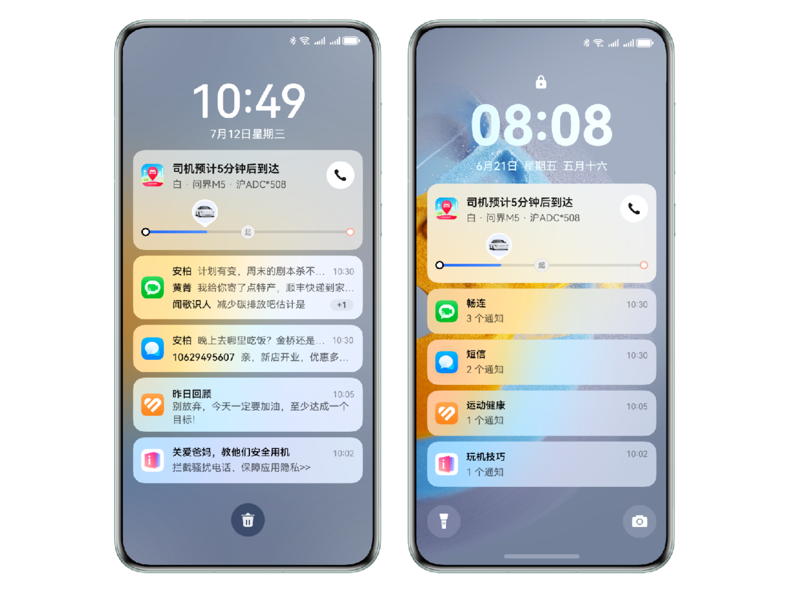
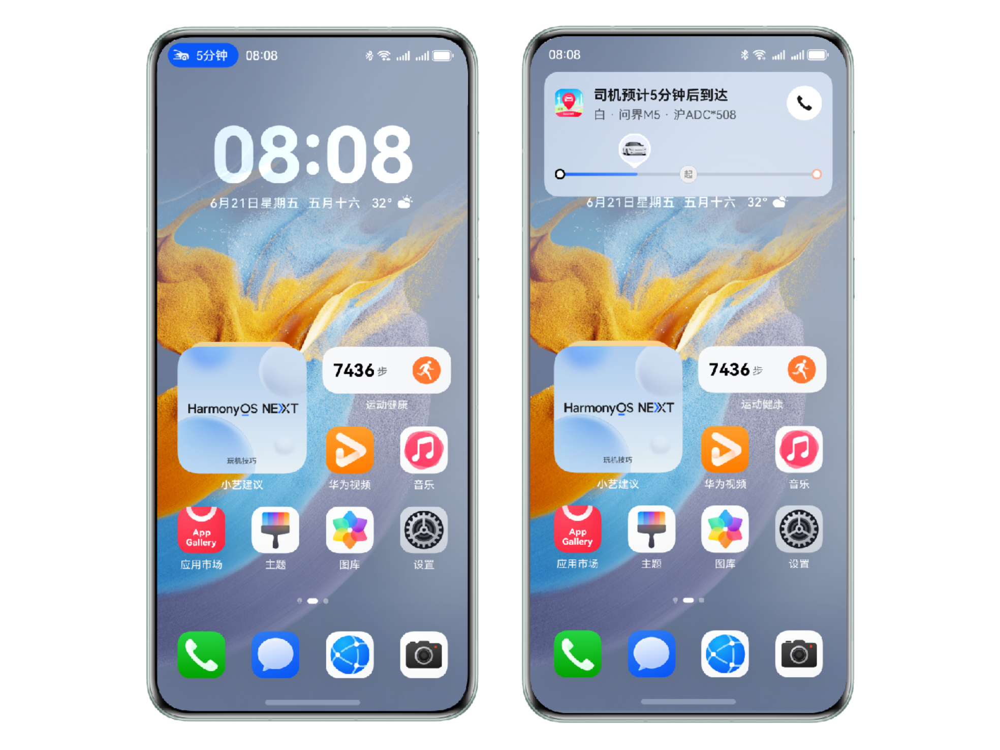
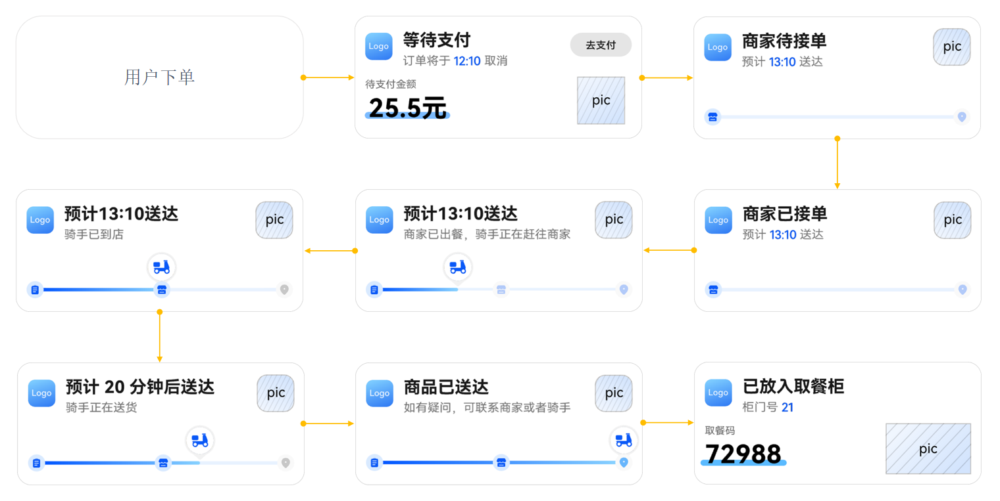
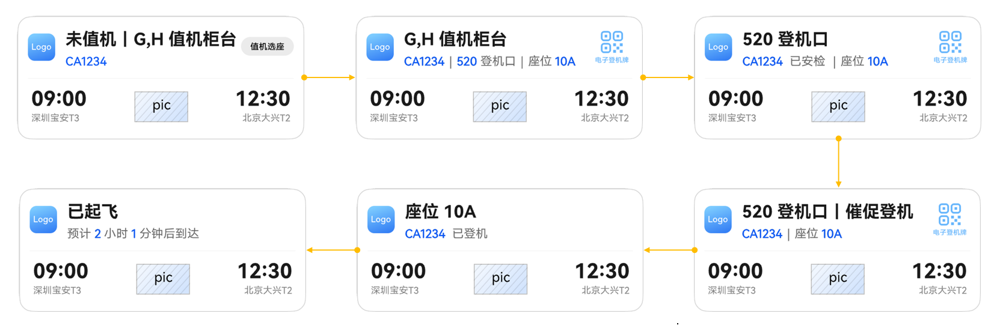
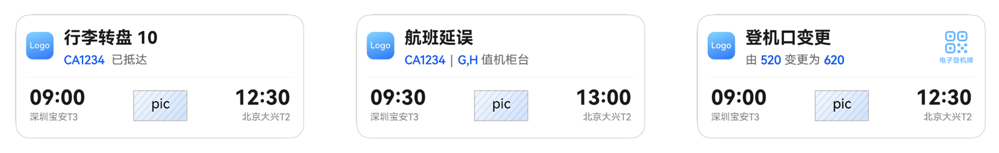
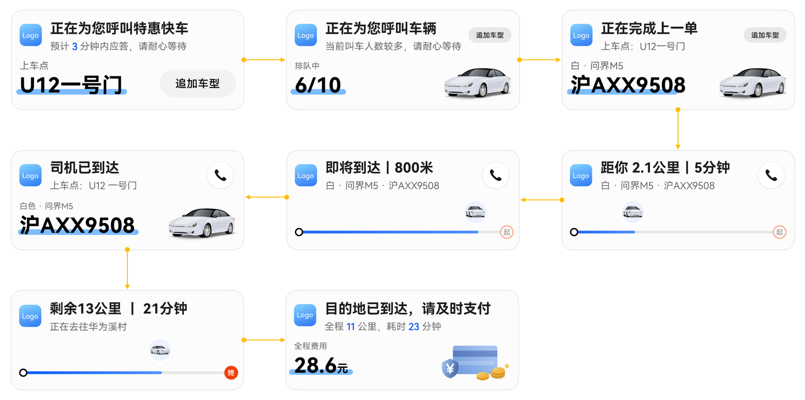

1 Explore a Bigger World with Live View Services
1.1 Keep Track of Important Updates in Real Time
In the mobile Internet era, user-centered apps have emerged to meet needs in shopping, navigation, entertainment, and other scenarios, enriching daily life. However, as the number of apps has grown, users face the challenge of managing multiple tasks while enjoying diverse services.
For example, while immersed in a game or TV series, can users remember to open an app to check whether a recent food order is on its way, a ride has arrived, or a restaurant reservation is ready? When multiple apps run in parallel, important services can easily be overlooked, affecting daily quality and efficiency.

Live View services can be used in this situation. They let apps display real-time order or service status updates on key surfaces such as the screen-off display, lock screen, notification center, and status bar. They also manage the lifetime and UI presentation of the information, and can vibrate or play a specific sound to remind users, helping them focus on ongoing tasks and view or process notifications promptly.

1.2 Rich Scenario Support
Live View scenarios apply to ride hailing, high-speed rail, food delivery, and more. Supported scenarios are listed below. For details, see this page.
|
Scenario type |
Description |
Applicable scope |
|---|---|---|
|
Ride hailing |
After a user books a ride online, display the driver's pickup wait time and the remaining distance and time during the trip. |
Applicable to ride hailing, taxis, carpooling, and shared rides. |
|
On-demand delivery |
A business scenario in which a courier delivers food or goods to a location specified by the user, usually within a short period. |
Applicable to food delivery, fresh-food delivery, and local delivery. |
|
Flights |
When a user follows a flight, display key changes such as boarding, departure, delay, cancellation, and arrival. |
Applicable when users travel by air or follow a flight's progress. |
|
High-speed rail/trains |
For high-speed rail or train travel, display the gate, seat number, train number, and train status. |
Applicable to high-speed rail and train travel. |
|
Queuing |
A business scenario where users are served in order through queue numbers. |
Applicable to queue-number scenarios in service halls, hospitals, banks, restaurants, and more. |
|
Food pickup |
A scenario in which users pick up food or goods after placing an order. |
Applicable to in-person restaurant pickup reminders, including queue status, preparation progress, and pickup reminders. |
|
Match scores |
Display changes in the scores of both teams. |
Applicable to game and sports events where score changes are displayed. |
|
Shared rentals |
Display real-time rental status, such as duration and fees, when users use a temporary rental service. |
Applicable to shared bikes, shared power banks, and temporary parking. |
|
Timing |
A scenario with an ongoing timer for a short period or a countdown before a task. |
Applicable to focus sessions, Pomodoro timers, and ticket-booking countdowns. Only utility apps may apply (timing scenarios support creation and updates on the device only). |
|
Exercise |
Display exercise duration and progress in real time during a workout. |
Applicable to indoor or outdoor activity tracking, such as running and cycling. |
|
Navigation |
Display upcoming route changes while users use a navigation service. |
Applicable to walking, cycling, and vehicle navigation. |
1.3 Popular Scenario Examples
When designing Live View for a specific app scenario, developers must consider the key points that require reminders and the content to display in the app service process. These are also what users care about most, so three popular scenarios are used as examples here.
1.3.1 On-demand Delivery Scenario
Key points in on-demand delivery include order placement, awaiting payment, awaiting merchant acceptance, order accepted, courier pickup, courier delivery, delivery completed, and placement in a pickup locker. Users can track delivery progress through Live View without repeatedly opening the app details page.

For detailed scenario point design, see On-demand delivery。
1.3.2 Flight Scenario
Key points in a flight scenario include check-in pending, checked in, boarding started, boarding reminder, boarded, departed, arrived, delayed, canceled, and gate changed. Live View displays different content at each point and reminds users to respond appropriately。

Special points such as delays, cancellations, and gate changes:

For detailed flight scenario point design, see Flight scenario。
1.3.3 Ride-Hailing Scenario
Ride-hailing scenarios are divided into immediate and scheduled trips based on whether the user departs immediately.
Scenario points mainly include requesting a ride, queuing, the driver completing the previous order, driver pickup in progress, approaching the pickup point, driver arrived, traveling to the destination, and arriving at the destination.
Users can view current vehicle and trip information at any point.
For scheduled trips, Live View should start reminding users 20 minutes before the planned departure.

For detailed point design, see Ride-hailing scenario。
Sample code is available for all three scenarios: Live View Kit - Implementing Live View for Multiple Scenarios. For more Live View content, see the Live View services article.